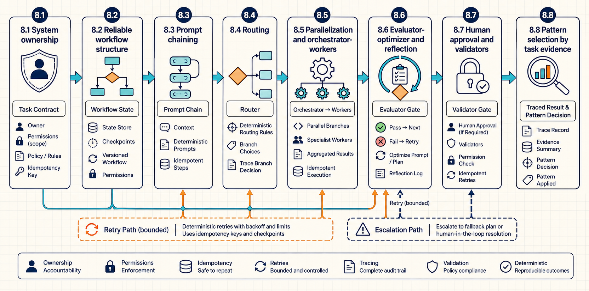
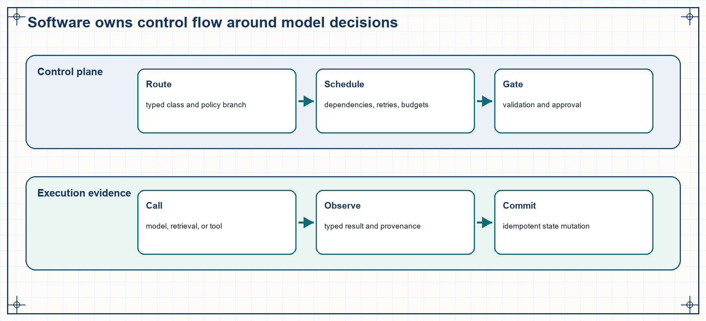
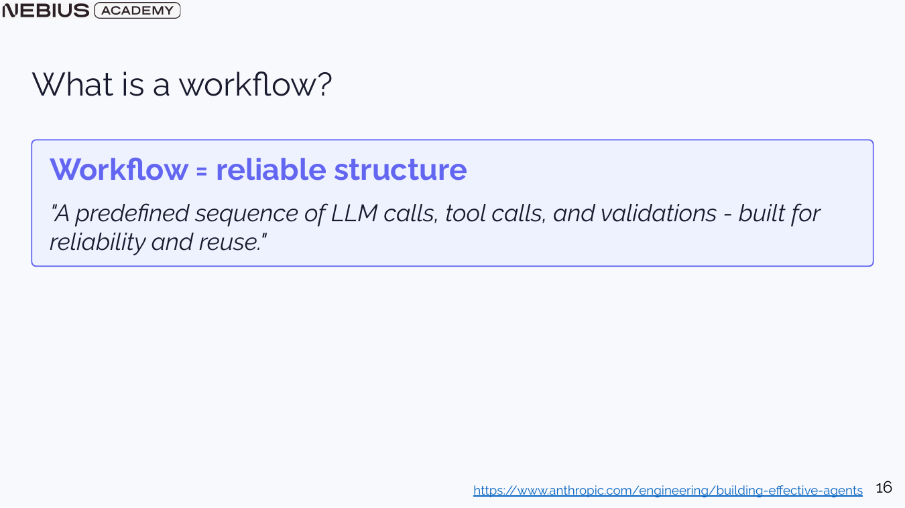
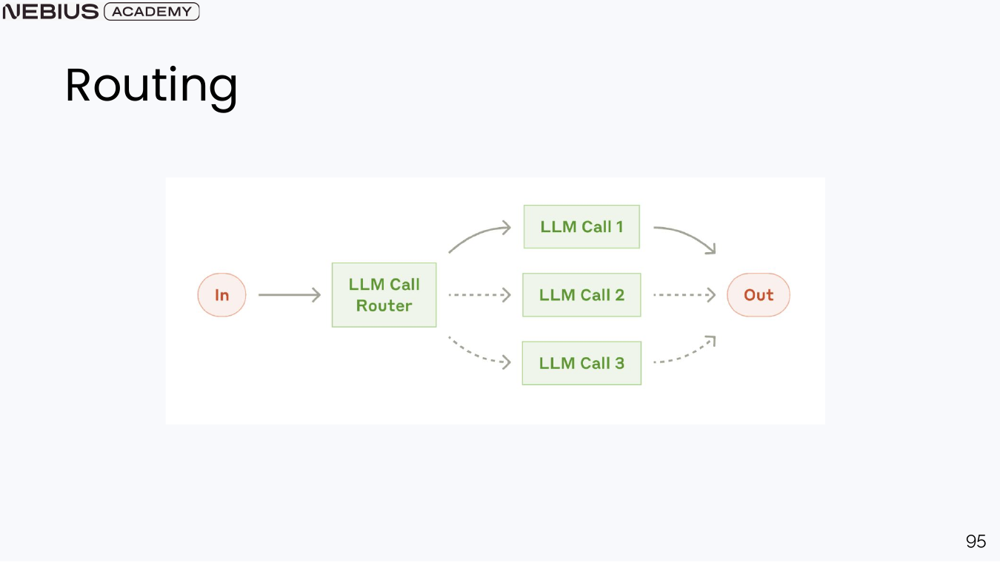
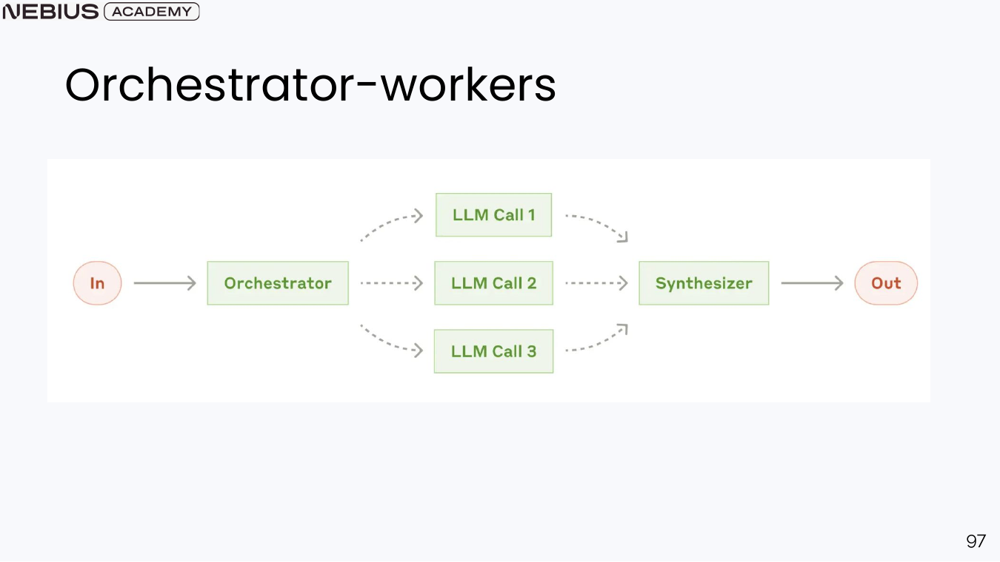
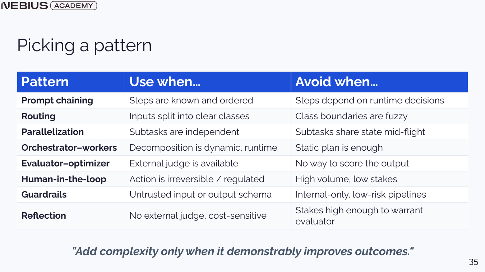

8 Controlled AI workflows
RAG added external evidence and component-level evaluation around a model call. A product also needs branching, tools, validation, state changes, retries, and human approval that should not be delegated implicitly to generated prose. Reliable workflows grow from an augmented model through chaining, routing, parallel work, evaluation loops, and explicit safety gates.

The workflow grows from fixed chains to routing, parallel work, feedback loops, and human approval while application code retains control of every transition.
8.1 Application-controlled workflow steps
A grounded model can answer from selected evidence but remains a probabilistic text generator. Useful products must read databases, calculate values, send requests, or update state under permissions the model does not enforce. An AI system combines model reasoning with application-owned tools, memory, routing, validation, and user interface.
The model is strong at language, broad knowledge, local reasoning, and adapting to a task description. It is weak as a source of current private facts, a deterministic calculator, a persistent database, or an authorization system. The application supplies those missing capabilities through code and external services.
Tool: A named application operation with a description, typed inputs, an execution implementation, and a result returned to the model or workflow.
Function calling: A model interface that returns a structured proposal for a tool name and arguments. The application validates and executes the proposal.
A tool call is not the side effect itself. The model proposes transfer_funds(amount=...); the application checks identity, balance, policy, limits, and approval before executing a real transfer. Tool results are also untrusted inputs: a web page or service response can contain instructions aimed at the model.

The model may contribute decisions inside each stage, but the application decides which outputs are valid and which state transitions are allowed.
The model produces probabilistic proposals: generated text, classifications, structured arguments, or candidate plans. The application is responsible for message construction, identity, permissions, routing, validation, execution, persistence, budgets, and user-visible error behavior. External services own the authoritative data or side effect they expose through a controlled interface.
These responsibilities meet at recorded interfaces. A request trace identifies which context entered the model; a tool trace identifies which validated action executed; a state trace identifies which component changed durable data. The separation allows a model checkpoint to change without silently changing authorization or business rules.
8.2 Workflow state and transitions
Tools extend what the system can do while preserving application authorization. When the sequence of steps and branches is known, asking the model to rediscover that sequence on every request adds avoidable variance. A workflow encodes the reliable structure and uses model calls only where language judgment is needed.
A workflow is a predefined sequence or graph of model calls, tool calls, validations, and state transitions. It can be completely deterministic or contain model-driven steps. The defining property is that application code governs the control-flow skeleton.

A workflow can still call an LLM. Reliability comes from controlling when it is called, what inputs it receives, how outputs are checked, and which branch follows.
Workflow
This method applies to tasks with known phases, stable policies, expected branches, or consequential state changes.. It is useful when reliability, auditability, latency bounds, and clear failure recovery matter..
It works by represent steps and transitions in code or a graph, define state schemas, and validate each output before the next transition.. Implement and test a known process once; then reuse it on every request.
A limit to keep in mind: Fixed sequential paths can perform poorly when the next useful action depends on unforeseen observations.
A workflow is an application-defined graph or sequence whose allowed steps are known before a request begins. Model calls may fill in text, classifications, or structured fields inside those steps, but the application determines which transitions exist, what each step receives, and which validator or fallback follows a failure.
Workflow quality is measured at both step and outcome level. Step traces reveal parse errors, invalid transitions, retries, and branch selection; outcome metrics show whether the complete process met quality, latency, cost, and policy targets. This makes a workflow appropriate for repeatable processes whose control logic benefits from software-managed execution.
8.3 Workflow control patterns
A workflow supplies a controlled sequence. One large model call may mix extraction, reasoning, transformation, and validation so thoroughly that failures cannot be located. Prompt chaining splits the task into steps whose intermediate outputs can be typed, inspected, and retried.
In a static chain, the output of one step becomes input to the next. A support workflow might extract entities, retrieve account data, draft an answer, and validate policy compliance. The chain is useful when the order is stable and each intermediate representation simplifies the next step.
- Benefit: each step has a narrower prompt and a testable output specification.
- Cost: every model call adds latency, tokens, and another failure point.
- Risk: an early error can propagate; validators should stop or repair before the next step.
- Design rule: use deterministic code for parsing, arithmetic, schema checks, and known transformations whenever possible.
Code example 8.1 - a chained workflow validates the extracted object before retrieval.
Code example: Code example 8.1 - a chained workflow validates the extracted object before retrieval.
intent = classify_intent(ticket_text)
assert intent in ALLOWED_INTENTS
entities = extract_entities(ticket_text, schema=TicketEntities)
validated = validate_customer_and_order(entities)
if not validated.ok:
return route_to_human(reason=validated.reason)
policy_chunks = retrieve_policy(intent, entities.product_type)
draft = draft_grounded_reply(ticket_text, policy_chunks)
return validate_reply(draft, policy_chunks, customer_state)classify_intent and extract_entities may use models, while validate_customer_and_order and validate_reply enforce application rules. The human route is a normal branch, not an exception hidden inside a prompt.
Prompt chaining divides a larger transformation into stages with explicit intermediate representations. One stage may extract facts, another normalize them, and a final stage compose an answer. Each intermediate output has a schema and local evaluation, allowing an early error to be located before it propagates through the remaining calls.
The additional calls create latency, cost, and compounding reliability trade-offs. If three stages succeed independently with probability 0.95, the probability that all three succeed is about 0.86 before retries or validation are considered. Chaining is therefore useful when intermediate results and schemas improve control or observability enough to justify the extra failure opportunities.
8.4 Specialized routing
Prompt chaining is effective when every request follows the same ordered steps. A mixed workload may contain FAQs, calculations, document questions, and out-of-scope requests that need different tools and policies. Routing classifies the request into a small explicit set and sends it to a specialized workflow.
A router can be deterministic for known patterns or model-based for semantic categories. Its output should be a typed label with confidence or fallback behavior. The route names must correspond to actual workers, not vague themes.

The dotted branches represent alternatives, not concurrent execution. A router should decline or escalate when the request does not fit a supported class.
| Route | Input format | Worker | Fallback |
|---|---|---|---|
| FAQ | Known policy question | RAG answer workflow | Insufficient-evidence response |
| Account operation | Authenticated user and structured request | Deterministic service workflow | Approval or human review |
| Data analysis | Authorized dataset question | Query planner and typed tools | Scope clarification |
| Out of scope | Unsupported domain or request | Decline path | Explain supported capabilities |
A router maps one request to a finite set of workers. Valid route labels represent concrete differences in data access, prompts, tools, or policy. An explicit unsupported or fallback label prevents a low-confidence request from being forced into the nearest available branch.
Router evaluation uses labeled requests, per-class precision and recall, a confusion matrix, and downstream cost. A semantically plausible misroute can still be harmful when it enters a branch with different permissions or evidence sources. Confidence thresholds and deterministic prechecks can reserve ambiguous cases for clarification or human review.
8.5 Parallel work and result joining
Routing chooses one path when request types are mutually exclusive. Some tasks contain independent subtasks whose results are all needed, so choosing only one branch would be incomplete. Parallelization runs independent work concurrently, while an orchestrator decomposes a request and synthesizes worker results.
Parallelization is appropriate when subtasks do not depend on one another’s intermediate state. Examples include translating several independent sections, running safety and quality checks together, or retrieving from multiple corpora. The workflow waits at a join point and combines results under an explicit merge rule.

Workers do not need broad context when the orchestrator gives each one a narrow input and output specification. The join step must resolve conflicts and missing results.
An orchestrator-worker pattern is useful when the way to split the work depends on the request. The orchestrator creates tasks, sends them to specialized workers, and combines their outputs. It adds a coordination model call, so the extra split or specialization must improve a measured final result.
Parallel safety
Do not parallelize steps that mutate the same state without a conflict rule. Concurrency can reduce latency while creating duplicate side effects, stale reads, or nondeterministic merges.
Parallel execution is valid only when tasks do not depend on one another’s intermediate results and do not mutate conflicting state. The orchestrator defines each worker’s input, output schema, deadline, retry policy, and authorization scope. The join step handles missing, inconsistent, duplicated, and late results from each branch.
Latency improvement is bounded by the slowest required branch plus orchestration and synthesis overhead. Evaluation therefore records serial baseline time, branch durations, peak concurrency, cancellation behavior, and final synthesis quality. Parallelism is useful when saved wall time exceeds its coordination and resource cost.
8.6 Feedback loops and consequential actions
Parallel workers increase throughput for independent tasks. A draft may instead need iterative improvement against a criterion that can be checked after each attempt. Evaluator-optimizer and reflection patterns add bounded feedback while preserving an explicit stop condition.
An evaluator-optimizer workflow generates a candidate, scores it with an external evaluator, and revises until the candidate passes or the budget ends. The evaluator can be deterministic, model-based, or human. It should return actionable criterion failures that the next attempt can address.
Reflection asks a model to critique its own or another model’s output before revision. It can help when a clear rubric exists, but repeated self-critique can increase cost without adding new evidence. External tests, retrieved sources, and independent graders provide stronger signals than unconstrained introspection.
Evaluator-optimizer
This method applies to a candidate response and a grader that returns specific, checkable deficiencies.. It is useful when quality can improve through revision and the evaluation cost is justified..
It works by generate, grade, revise from criterion-level feedback, and stop on pass, unchanged score, or budget.. The loop is useful only when feedback adds information that the original generation did not already contain.
A limit to keep in mind: A weak evaluator can reward superficial changes or create reward hacking.
Log every candidate and score. If only the final answer is kept, an apparent improvement cannot be separated from grader inconsistency or sampling luck.
Evaluator-optimizer and reflection loops add feedback between attempts. An evaluator converts a candidate into criterion-level findings; the next attempt receives those findings and produces a revised candidate. The loop ends on a pass condition, a fixed attempt or cost budget, or a no-progress condition.
The evaluator becomes part of the system’s behavior and needs its own calibration. An unstable or exploitable judge can reward verbosity, format tricks, or repeated self-justification. Calibration tests must show that its score tracks real improvement. Evaluation compares final quality with a one-pass baseline while also recording attempts, evaluator scores, latency, cost, and unchanged-output loops.
8.7 Validators and human approval
Feedback loops can revise low-stakes text automatically. A consequential action such as moving money, deleting data, or sending a binding message requires an authorized person or deterministic policy check; a model score cannot grant that permission. Human-in-the-loop gates and deterministic validators bind approval to a concrete action and current state.
A human approval step should show the proposed action, parameters, evidence, expected effect, and reversible alternatives. Approval is invalid if the underlying state changes before execution; revalidate identity, permissions, balances, or inventory after approval and immediately before the side effect.
- Guardrail: A policy or validation mechanism that restricts inputs, outputs, tool use, or state changes. Guardrails may be deterministic, model-based, or human, but consequential authorization should not depend on model judgment alone.
The control surface can be reviewed at the input, output, tool, and state boundaries:
- Input validation: size limits, content type, authentication, and injection-resistant separation of policy from data.
- Output validation: schema, required evidence, allowed values, sensitive-data checks, and refusal or escalation state.
- Tool validation: identity, permission, argument ranges, rate limits, idempotency keys, and environment isolation.
- State validation: compare the current version with the version the proposal was based on before committing.
Approval is scoped
User consent for one visible action does not authorize a different amount, recipient, file, or future action. Store the approved parameters and reject execution when they no longer match.
Human approval is a time-bounded authorization event, not a general transfer of control. The approval view contains the proposed action, normalized parameters, relevant evidence, expected effect, alternatives, and the identity and state against which approval was granted. Execution revalidates those facts immediately before the side effect.
Validators provide narrower automatic gates before and after approval. Input validation checks identity, scope, arguments, and policy; tool validation checks result type and provenance; output validation checks the final state. The audit record links proposal, approval, revalidation, execution, and outcome so a later review can distinguish an invalid proposal from an expired approval or failed tool.
8.8 The smallest sufficient workflow
The workflow toolkit now includes chains, routes, parallel work, orchestrators, evaluation loops, approval, and validation. Choosing a complex pattern because it sounds advanced increases latency and failure paths without proving value. Pattern selection follows dependency structure, external judgment, side-effect risk, and measured bottlenecks.

The table’s final sentence is the decision rule: complexity must improve a measured final result. A simpler workflow remains the baseline.
| Task property | Preferred starting pattern | Escalation condition |
|---|---|---|
| Known ordered steps | Prompt chain or deterministic workflow | Runtime observations must change the next action |
| Distinct request classes | Router plus specialized workflows | The route set cannot represent the task safely |
| Independent subtasks | Parallel branches and explicit join | Dependencies require dynamic planning |
| External quality criterion | Evaluator-optimizer with budget | The evaluator cannot produce reliable feedback |
| Consequential action | Approval and deterministic gate | No autonomous escalation; increase oversight |
Record the state before and after every step, the input and output schema, model and prompt version, tool call and result, validation decision, retry, cost, and wall time. This record connects workflow debugging to controlled agent tool use in Chapter 9.
Chapter checkpoint
A workflow encodes known control flow and uses models inside tested boundaries. An agent is justified only when the next useful action cannot be specified safely before observing the environment.